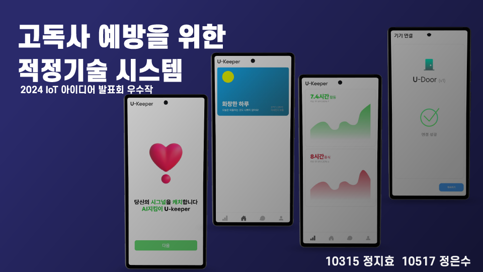
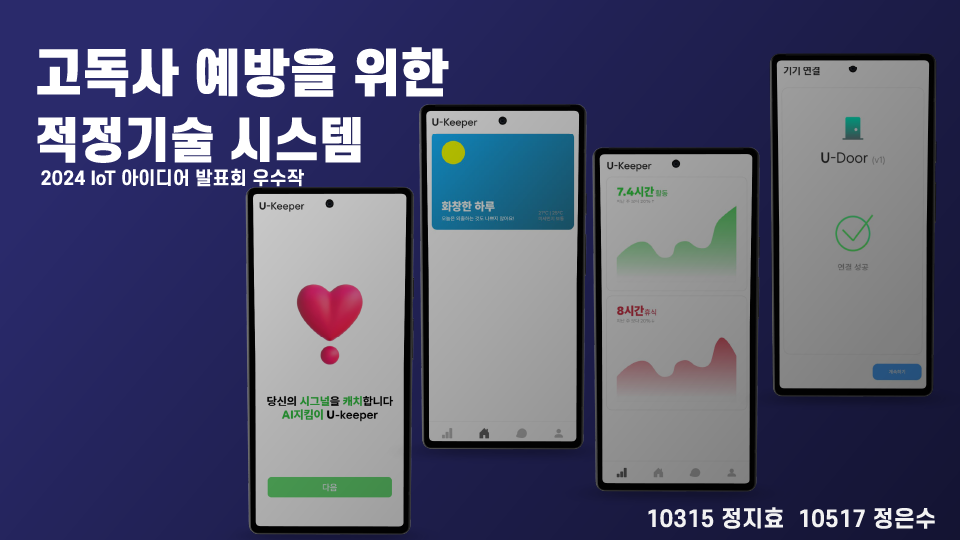

동아리 OT
동아리 오리엔테이션
선린인터넷고 소프트웨어 프로젝트 동아리
Null은
공백입니다.
그렇기에 우리는 무엇이든 담을 수 있습니다.
우리는 무에서 유를 창조하는 Creator 입니다.
 

Null은
소프트웨어를 이용해 사회적 약자를 돕고,
사회 문제 해결에 도움을 줄 수 있는 프로젝트를
개발 및 연구 하는 것을 목적으로 설립된 동아리로
독자적이고 독창적인 커리큘럼을 제공합니다.
동아리 오리엔테이션
Problem scoping(문제 정의) 과정을 통해
사회적 문제를 명확히 파악하고,창의적인 아이디어로
해결 방향을 도출하기위한 준비를 하는 단계입니다.
Ideation(아이디어 도출) 과정은
프라블럼 스코핑 단계에서 파악하였던
문제를 바탕으로
소프트웨어를 이용한 창의적인
해결 방안을 탐구하믄 단계입니다.
팀 빌딩 과정은
프라블럼 스코핑과 아이데이션 단계를 바탕으로
자신의 아이디어에 대해 발표하고,
동아리 부원들끼리 팀을 구성하는 단계입니다.
소셜 임팩트 프로젝트는
사회의 선한 영향력을 줄 수 있는
프로젝트 입니다.
소셜 임팩트 프로젝트
아이디어 발표회는
팀 빌딩 단계에서 결성된 팀으로
아이데이션 단계에서 도출된
아이디어를
더욱 구체화 하고
프로젝트 진행 일정까지 계획하여
발표하는 단계입니다.
Tech Sprint(사용기술 스터디 및 개발)
해당 단계는 프로젝트의 사용되는 기술을
팀원들끼리 역할을 분배하여
스스로 익히고 학습한것을
서로 공유하는 단계로
여러 분야가 융합되어 진행되는
소프트웨어 프로젝트 진행시,
가장 중요한 역량을 기르는 단계 입니다.
Documentation(진행 상황 기록)
단계는 프로젝트의 사용되는 기술을
팀원들끼리 역할을 분배하여
스스로 익히고 학습한것을
서로 공유하는 단계로
여러 분야가 융합되어 진행되는
소프트웨어 프로젝트 진행시,
가장 중요한 역량을 기르는 단계 입니다.
Progress Check(진행 상황 체크)
단계는 현재까지 진행상황을 체그하는 단계 입니다.
진행상황 체크를 위해 팀별로 도큐멘테이션한 내용을 발표합니다.
환류 및 동료평가 단계는 프로그래스 체크 후
현재까지 과정을 평가하는 단계로 일방적으로
평가하는 단계가 아니라
서로 의견을 나누는 단계 입니다.
Progress Check(진행 상황 체크)
단계는 현재까지 진행상황을 체그하는 단계 입니다.
진행상황 체크를 위해 팀별로 도큐멘테이션한 내용을 발표합니다.